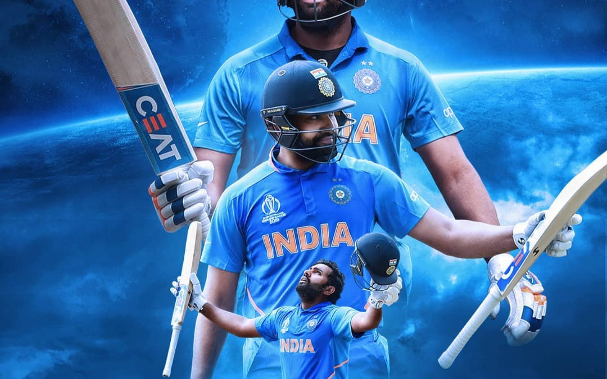

IPL Career
- Rohit Sharma is the most successful captain in the Indian Premier League. He has won the IPL trophy five times, four times as the captain of the Mumbai Indians.
- Sharma’s IPL campaign started with the Deccan Chargers. He was the vice-captain and a key member of the DC squad which won the coveted trophy in its second season.
- In 2011, Sharma was purchased by the Mumbai Indians for Rs 20 Lakhs. However, his contribution to the Ambani-owned franchise has been invaluable.
- Sharma was given the captainship of the franchise and led the MI to glory.
- In 2015, he led Mumbai Indians to win the IPL title by beating Chennai Super Kings with a margin of 41 runs in the final.
- In 2017, the Mumbai Indians finished at the top of the table and also went on to win the final under his captaincy. Rohit Sharma and co became the most successful side in the IPL when they won it for the fifth time in 2020.
- Rohit Sharma leads the Mumbai Indians in the IPL 2021 which is scheduled to play from April 9, 2021.
- With the bat, Sharma leads from the front as an example. He has played 201 IPL matches, scoring 5249 runs at an average of 31.24 and a strike rate of 130.6. He has hit 39 half-centuries and a sole century.
ODI Career
- Rohit Sharma received his first ODI call-up against Ireland on 23 June 2007. Although he did not get to bat, India won the match by 8 wickets.
- At this point of time, Rohit Sharma used to bat in the middle-order. When he finally got a chance to bat against South Africa, Sharma was unable to play well as he got out at 8.
- Sharma scored his 1st half-century against Pakistan in November 2007 followed by a 39* against Australia and 70* against Sri Lanka in February 2008.
- His triple century in Ranji in 2009 ensured he returned to the ODI squad in 2010.
- This time Sharma took his chance as he scored his first ODI century (114) against Zimbabwe followed by another century against Sri Lanka (101*).

Rohit Sharma as ODI Captain
- On December 8, 2021, BCCI named Rohit Sharma as the skipper of the Indian white-ball cricket team after Virat Kohli stepped down from the T20I skipper role.
- Rohit Sharma is expected to lead the side in 3 match ODI series in the India tour of South Africa 2021-22 but as Rohit Sharma was ruled out of the South Africa tour owing to an injury KL Rahul has been appointed as India’s ODI skipper.
- On February 6, 2022, Rohit Sharma leads the Indian cricket team for the first time as the full-time captain in India vs West Indies 1st ODI match at Ahmedabad. Notably, this is also India’s 1000th ODI.
Rohit Sharma in 2019 World Cup
- India were the favourites to win the 2019 Cricket World Cup, mainly due to the batting powerhouse of the top order.
- Sharma scored a century in the first match against South Africa.
- He scored a half-century in the second match against Australia followed by 140 against arch-rivals Pakistan.
- Sharma played a crucial role as India we unbeaten in the first five matches of the World Cup. In the 6th match against England, he scored 102 as India’s unbeaten record came to an end.
- Rohit finished as the tournament’s high scorer 648 runs.
- He scored 5 centuries and 2 half-centuries and is the only player to do so in a single World Cup.
- In his ODI career, Sharma has played 227 ODI matches scoring 9,205 runs with an average of 48.96 and a strike rate of 88.9. Sharma also has 29 centuries and 43 half-centuries with 3 double centuries to his name.
Test Career
- Rohit was never considered to be a Test cricketer. Rohit made his Test Debut in November 2013.
- It was the same series when Sachin Tendulkar retired. Sharma made his Test debut at Eden Gardens in Kolkata. He scored 177 on his debut match
- It was the second-best score on debut by an Indian just Shikhar Dhawan’s score of 187.
- He scored another century in the very next match.
- Rohit Sharma has played 43 Test matches in which he has scored 3047 runs with an average of 46.88. He has scored one double century, 8 centuries and 14 half-centuries.
- Rohit Sharma scored his 1st outside India hundred against England on September 4, 2021, which is eventually his 8th overall Test hundred.

T20 International Career
- When it comes to T20, you can hardly find a complete opener than Rohit Sharma.
- Rohit made his T20 debut for India against England in 2007 ICC World T20 Championships but did not get an opportunity to bat.
- However, he did get an opportunity against South Africa in his second match and took it with both hands
- In the semi-finals against Australia, Sharma made a small cameo at the end of the innings and scored 8* off 5 balls as India won by 15 runs.
- India won the final by 5 runs. In 2007, Sharma was used predominately as a middle-order batsman coming at number 7 or 8. However, under MS Dhoni’s captainship, he has promoted up the order to open the innings. This change affected not only his T20 career but the ODI career as well.

Rohit Sharma Double Centuries
- Rohit Sharma has 4 double centuries. He is the first and only player to have 3 double centuries in ODI’s
- He has a double century in test cricket as well, which he achieved against South Africa in 2019.
- His first double hundred came against Australia in Bengaluru on 2 November 2013.
- The following year, Sharma scored 264 runs against Sri Lanka in Kolkata on 13 November 2014. By doing so, Shama became the highest individual score in ODI.
- His third double hundred came against Sri Lanka at Mohali on 13 December 2017. He scored 208* and became the first player with three double centuries

Rohit Sharma Awards
- CEAT Indian Cricketer of the Year (2016)
- Arjuna Award (2015)
- Dilip Sardesai Award for Best Indian cricketer of the Year (2012-13)
- BCCI Special Award for scoring a world record ODI score of 264 (2014)
- ICC ODI Team of the Year: 2014, 2016, 2017, 2018
- Rohit Sharma won the Sportsman of the year award from Indian Sports Honours. (Year – 2019)
- Rohit Sharma was awarded the highest sports honor of the country, the Rajiv Gandhi Khel Ratna Award in 2020.
- Awarded the Golden Bat award for scoring the most number of runs in ICC Cricket World Cup 2019.

Rohit Sharma Records
- Sharma holds the highest individual score of 264 in the ODIs.
- Rohit Sharma has scored 28 centuries in ODIs. Only two Indians ahead of him are Sachin Tendulkar and Virat Kohli
- He is the only batsmen to score 5 centuries in the 2019 ICC Cricket World Cup
- Rohit holds the unique record of scoring a century with a six in all three formats.
- Sharma has hit the highest number of fours (33) in an ODI match.
- Rohit holds the second-highest number of sixes in an ODI- 16.
- He is the second-fastest opener in the world as well as the fastest Indian opener to reach 4,000 ODI runs. He took 83 innings.
- He, along with Sachin holds the records for most centuries in the World Cup- 6.
- Rohit is the only player to have scored 4 T20I centuries. Sharma has hit the most sixes in T20’s- 120.
- Rohit Sharma is the only Indian to score a T20I century as a captain.
- Rohit scored 2442 runs in International cricket in 2019. He went past Sanath Jayasuriya’s 2387 runs for Sri Lanka in 1997
- Third Indian to score Two consecutive centuries in his first two test matches.